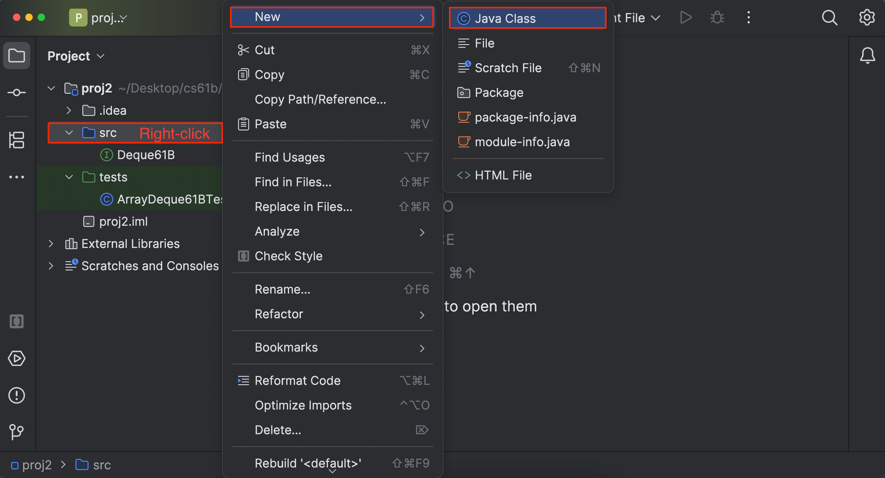
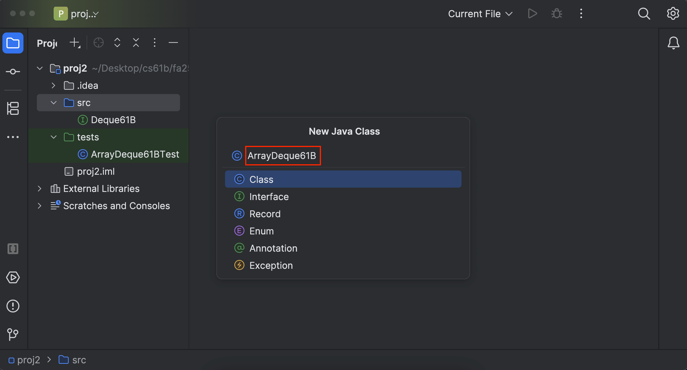
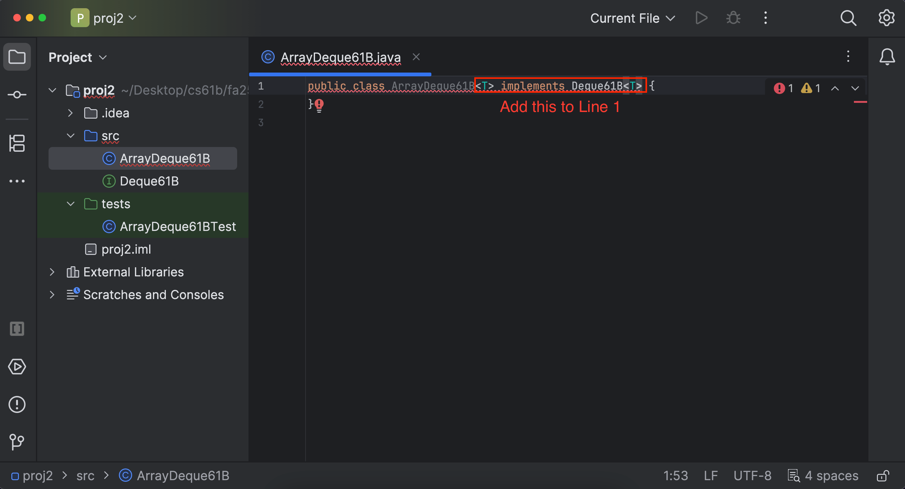
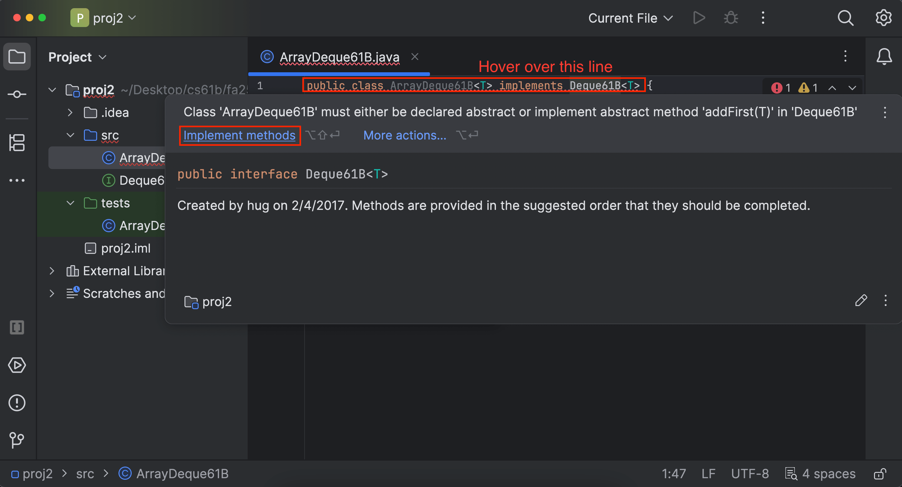
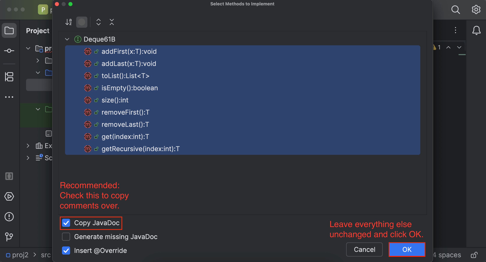

Mini-Project 2: ArrayDeque61B
Spring 2026 TODO: Add a short non-trivial default method.
Lectures needed for this project:
- Lecture 5 (DLLists, ArrayLists), or Chapter 6 of the textbook.
- Lecture 6 (Testing), or Chapter 7 of the textbook.
- Lecture 7 (ArrayLists), or Chapter 8 of the textbook.
- Lecture 9 (Iterators, Object Methods), or Chapter 12 of the textbook. This is only needed for the last two tasks.
Partner policy: No partners. Discussing ideas with other students is allowed, but code sharing is not allowed, and the solutions you submit should be your own work! More details on the policies page.
In the previous project, we built LinkedListDeque61B. Now we’ll see a different implementation of the Deque61B interface that uses a backing array, rather than linked nodes. Also, unlike the previous project, we will provide relatively little scaffolding. In other words, we’ll say what you should do, but not how.
By the end of this assignment, you will…
- Gain an understanding of the implementation of a backing array in data structures.
- Have more experience using testing and test-driven development to verify the correctness of these data structures.
Setup
Follow the Assignment Workflow Guide to get started with this assignment. This starter code is in the proj2 folder.
On this project, you are limited to submitting to Gradescope 4 times every 24 hours. In other words, you have 4 submission tokens, each with a refresh rate of 24 hours.
Unlike previous assignments, not all tests will be provided locally, so it is up to you to write tests to verify the correctness of your own code. See the Writing Tests section for more details.
You must follow the style guide for ArrayDeque61B.java, and you can check style yourself in IntelliJ as many times as you want. (The style checker is turned off for any tests you write.)
Task 1: Creating the File
If you need a refresher on Deque61Bs, refer to the Project 1 spec and the Deque61B.java file.
Start by creating a file called ArrayDeque61B.
This file should be created in the proj2/src directory. To do this, right-click on the src directory, navigate to “New -> Java Class”, and give it the name ArrayDeque61B.


Just like you did in Project 1, we want our ArrayDeque61B to be able to hold several different types. To enable this, you should edit the declaration of your class so that it reads:
public class ArrayDeque61B<T>
Recall from lecture that it doesn’t actually matter if we use T or some other string like ArrayDeque61B<Glerp>. However, we recommend using <T> for consistency with other Java code.
We also want to tell Java that every ArrayDeque61B is a Deque61B, so that users can write code like Deque61B<String> ad = new ArrayDeque61B<>();. To enable this, change the declaration of your class so that it reads:
public class ArrayDeque61B<T> implements Deque61B<T>
At this point, your class declaration should look like the line above.

Once you’ve done this step, you’ll likely see a squiggly red line under the entire class declaration. This is because you said that your class implements an interface, but you haven’t actually implemented any of the interface methods yet.
Hover your mouse over the red squiggle, and click the “implement methods” button when the error message box pops up. This will autogenerate the method headers for you.


Now, your class should be filled with a bunch of empty method declarations. These are the methods that you’ll need to implement for this project!
Lastly, you should create an empty constructor.
To do this, add the following code to your file, leaving the constructor blank for now.
public ArrayDeque61B() {
}
Now you’re ready to get started!
Just like the previous project, you may not use any of the built-in
java.utildata structures in your implementation! The whole point is to build your own versions!There are a few places where you may use specific data structures outside of tests, and we will clearly say where.
You should not edit Deque61B.java at any point in the project (except one place where we tell you to).
Task 2: Constructor
Your deque must use a Java array as the backing data structure.
You will need to somehow keep track of what array indices hold the deque’s front and back elements. We strongly recommend that you treat your array as circular for this exercise. In other words, if your front item is at position 0, and you addFirst, the new front should loop back around to the end of the array (so the new front item in the deque will be the last item in the underlying array). This will result in far fewer headaches than non-circular approaches.
See the lecture slides for more details. In particular, note that while the conceptual deque and the array contain the same elements, they do not contain them in the same order.
Hint: If you’re having trouble, keep in mind that it’s useful to start off nextLast greater than nextFirst, but you can implement this however you choose to do so!
Hint: You cannot create an array of generics (e.g. new T[1000]) in Java for reasons beyond the scope of this course. You will instead need to use the syntax (T[]) new Object[1000].
You may add any private helper classes or methods in ArrayDeque61B.java if you deem it necessary. We recommend creating one (or more) helper functions to avoid implementing the wraparound logic in multiple places.
Declare the necessary instance variables, and implement the constructor.
For autograder purposes, the starting size of your backing array must be
8.
Task 3: addFirst and addLast
These two methods must not use looping or recursion. A single add operation must take constant time, that is, adding an element should take approximately the same amount of time no matter how large the deque is (with one exception). This means that you cannot use loops that iterate through all / most elements of the deque.
Just like with LinkedListDeque: After you’ve written tests and verified that they fail, implement addFirst and addLast.
For the intended experience, don’t worry about resizing the array yet. We will implement resizing in a later task.
Task 4: get and getRecursive
Unlike in LinkedListDeque61B, the get method must take constant time.
As with LinkedListDeque61B, get should return null when the index is invalid (too large or negative).
Note that you should return null if the index is larger than the size of your deque, not the underlying array. For instance, if your underlying array has size 8, but add has only been called on your deque 3 times, then there are only 3 items, and any index beyond 2 is out of bounds.
If the deque is empty, get should return null.
Hint: If ad.get(0) always returns items[0], you’re doing it wrong. Keep in mind that the front item of your deque isn’t necessarily in position 0. For example, in the lecture slides, I arbitrarily picked position 4 as the position where the front of the deque starts.
After you’ve written tests and verified that they fail, implement get.
Although we are not using a linked list anymore for this project, it is still required to implement getRecursive to keep consistent with our interface. This method technically shouldn’t be in the interface, but it’s here to make testing nice. You can just copy this code block for getRecursive:
@Override
public T getRecursive(int index) {
throw new UnsupportedOperationException("No need to implement getRecursive for ArrayDeque61B.");
}
“Implement” getRecursive by copying the code block above.
Task 5: isEmpty and size
These two methods must take constant time. That is, the time it takes to for either method to finish execution should not depend on how many elements are in the deque.
Write tests for the isEmpty and size methods, and check that they fail. Then, implement the methods.
Task 6: toList
toList will continue to be useful to test your Deque61B.
Write the toList method. Unlike LinkedListDeque, you are not given tests this time, so you will need to write them!
The first line of the method should be something like List<T> returnList = new ArrayList<>(). This is one location where you are allowed to use a built-in Java data structure.
Hint: One of the earlier methods may be helpful for implementing this method.
Hint: Your toList method should return a list with the elements in ArrayDeque61B and in the order that the elements were added (i.e. the “conceptual version of the Deque”). Also, be sure to return only values added as elements into the deque (e.g. don’t return null unless it was explicitly added as an element).
Some later methods might seem easy if you use toList. You may not call toList inside ArrayDeque61B; there is a test that checks for this.
Task 7: removeFirst and removeLast
All that’s left is to test and implement all the remaining methods. For the rest of this project, we’ll describe our suggested steps at a high level. We strongly encourage you to follow the remaining steps in the order given. In particular, write tests before you implement the method’s functionality! This is called test-driven development, and helps ensure that you know what your methods are supposed to do before you do them.
Write some tests that test the behavior of removeFirst and removeLast, and again, ensure that the tests fail. Then, implement the methods.
Do not maintain references to items that are no longer in the deque.
removeFirst and removeLast may not use looping or recursion. Like addFirst and addLast, these operations must take constant time. Refer to the sections above for more information on what this means.
Task 8: Resizing Up
We recommend you complete all the previous tasks first, verify that they are working correctly without resizing, and come back to resizing after.
The exception to an ArrayDeque’s “constant time” requirement is when the array fills, and you need to “resize” to have enough space to add the next element. In this case, you can take “linear time” to resize the array before adding the element.
Correctly resizing your array is very tricky, and will require some deep thought. Try drawing out various approaches by hand. It may take you quite some time to come up with the right approach, and we encourage you to debate the big ideas with your fellow students or TAs. Make sure that your actual implementation is by you alone.
Make sure to resize by a geometric factor. If you get an ExecutionTimeoutException when working on resizing, make sure you’re resizing using a multiplicative (geometric) factor and not an additive factor!
Some tips as you work on resizing:
- Try to get everything working for a fixed-size array first. This would be good point to start to familiarize yourself.
- Once you are confident working solution for a fixed-size array, try resizing - consider having a helper method for it!
- When in doubt, draw it out! We suggest drawing box-and-pointer diagrams (or diagrams in general) when faced with issues in your methods, it will help you understand both your code as well as the intended logic better.
- We do not recommend using
arraycopywith a circular implementation. It will work, but results in a significantly more complex (and harder to debug!) implementation than necessary. Instead, we suggest thinking forward to how you might implementgetand using aforloop in some way.
After you have a working addFirst and addLast (without resizing), modify the methods so they support resizing. Use tests to verify that they are correct.
In your tests, make sure to add enough elements so that your backing array resizes! For more info on resizing, check out these lecture slides.
Task 9: Resizing Down
The amount of memory that your program uses at any given time must be proportional to the number of items. For example, if you add 10,000 items to the deque, and then remove 9,999 items, you shouldn’t still be using an array that can hold 10,000 items. For arrays of length 16 or more, your usage factor should always be at least 25%. This means that before performing a remove operation, if the number of elements in the array is at or under 25% the length of the array, you should resize the array down. For arrays length 15 or less, your usage factor can be arbitrarily low.
We, again, do not recommend using arraycopy with a circular implementation. If you followed our advice above to use a for loop to resize up, resizing down should look very similar to resizing up (perhaps a helper method?).
After you have a working removeFirst and removeLast (without resizing), modify the methods so they support resizing. Use tests to verify that they are correct.
Writing Tests
Refer to the Project 1 spec for a review of how to write tests. Similar to Project 1, you will be scored on the coverage of your unit tests in the Project 2 autograder.
You might find some of your tests from Project 1 to be reusable in this project; don’t be afraid to copy them over!
Note that you should only be using variables and methods found in the Deque interface when writing your coverage tests. This is because we run our “own” Deque implementations against your tests to determine if they have enough coverage.
If you would like to check how good your tests are, you can use the “[Ungraded] Mini-Project 2: ArrayDeque Test Coverage” assignment on Gradescope. This assignment is ungraded and does not affect your grade. It is a subset of the full autograder that only checks your tests, not your actual ArrayDeque implementation. In other words, the coverage tests from the full autograder have been duplicated in this ungraded assignment. Unlike the full autograder, this ungraded assignment has no token limit, so you can use this ungraded assignment to check your test quality as often as you’d like.
Hint: If you’re having trouble with coverage tests, there’s a chance that when running your tests against the staff version of the code, we run into an assertion error. Make sure that all your assertion statements have the correct expected output! For instance, if you had code that called ad.get(0) on an ArrayDeque61B with the elements [1, 2, 3], and asserted that the 0th element should be 2, any tests written after this incorrect test won’t count in the test coverage.
If you’re stuck and your tests aren’t passing the autograder tests, we’ve provided description of the required flags below.
Flags for add tests
add_first_from_empty: Check thataddFirstworks on an empty deque.add_last_from_empty: Check thataddLastworks on an empty deque.add_first_nonempty: Check thataddFirstworks on a non-empty deque.add_last_nonempty: Check thataddLastworks on a non-empty deque.add_first_trigger_resize: Check thataddFirstworks when called on a full underlying arrayadd_last_trigger_resize: Check thataddLastworks when called on a full underlying array
Flags for add after remove tests
add_first_after_remove_to_empty: Add some elements to a deque and remove them all, then check thataddFirststill works.add_last_after_remove_to_empty: Add some elements to a deque and remove them all, then check thataddLaststill works.
Flags for remove Tests
remove_first: Check thatremoveFirstworks.remove_last: Check thatremoveLastworks.remove_first_to_empty: Add some elements to a deque and remove almost all of them. Check that removing the last element withremoveFirstworks.remove_last_to_empty: Add some elements to a deque and remove almost all of them. Check that removing the last element withremoveLastworks.remove_first_to_one: Add some elements to a deque and remove almost all of them. Check that removing the second to last element withremoveFirstworks.remove_last_to_one: Add some elements to a deque and remove almost all of them. Check that removing the second to last element withremoveLastworks.remove_first_trigger_resize: Called when usage factor is <= 25% and array size > 8. Checks that the array resizes appropriately.remove_last_trigger_resize: Called when usage factor is <= 25% and array size > 8. Checks that the array resizes appropriately.
Flags for get Tests
get_valid: Check that get works on a valid index.get_oob_large: Check that get works on a large, out of bounds index.get_oob_neg: Check that get works on a negative index.
Flags for size tests
size: Check that size works.size_after_remove_to_empty: Add some elements to a deque and remove them all, then check that size still works.size_after_remove_from_empty: Remove from an empty deque, then check that size still works.
Flags for isEmpty Tests
is_empty_true: Check that size works on an empty deque.is_empty_false: Check that size works on a non- empty deque.
Flags for toList tests
to_list_empty: Check thattoListworks with emptyArrayDeque.to_list_nonempty: Check thattoListworks with non-emptyArrayDeque.
Flags for advanced resize tests
resize_up_and_resize_down: Trigger a resize up and then a resize down in the same test.
Task 10: iterator
In the remainder of the project, you are going to expand upon the functionality of the Deque61B interface. These final two tasks will use Lecture 9 on Iterators and Object Methods.
One shortcoming of our Deque61B interface is that it can not be iterated over. That is, the code below fails to compile with the error “foreach not applicable to type”.
Deque61B<String> ad = new ArrayDeque61B<>();
ad.addLast("front");
ad.addLast("middle");
ad.addLast("back");
for (String s : ad) {
System.out.println(s);
}
Similarly, if we try to write a test that our Deque61B contains a specific set of items, we’ll also get a compile error, in this case: “Cannot resolve method containsExactly in Subject”.
public void addLastTestBasicWithoutToList() {
Deque61B<String> ad = new ArrayDeque61B<>();
ad.addLast("front"); // after this call we expect: ["front"]
ad.addLast("middle"); // after this call we expect: ["front", "middle"]
ad.addLast("back"); // after this call we expect: ["front", "middle", "back"]
assertThat(ad).containsExactly("front", "middle", "back");
}
Again, the issue is that our item cannot be iterated over. The Truth library works by iterating over our object (as in the first example), but our ArrayDeque61B does not support iteration.
To fix this, you should first modify the Deque61B interface so that the declaration reads:
public interface Deque61B<T> extends Iterable<T> {
(This is the only place in the project where you should modify Deque61B.java.)
Implement the iterator() method in ArrayDeque61B.java, using the techniques described in lecture.
Reminder: You are not allowed to call toList here.
We haven’t provided you with test files for your iterator (or the two methods in the next two tasks). However, we strongly encourage you to use the techniques you have learned so far to write your own tests.
You can structure these tests however you’d like, since we won’t be testing them in the test coverage. One possible (and suggested) structure is to create a new file in the tests directory called ArrayDeque61BTest.java so that you have a separate testing file just for this part of the project.
Task 11: equals
Consider the following code:
@Test
public void testEqualDeques61B() {
Deque61B<String> ad = new ArrayDeque61B<>();
Deque61B<String> ad2 = new ArrayDeque61B<>();
ad.addLast("front");
ad.addLast("middle");
ad.addLast("back");
ad2.addLast("front");
ad2.addLast("middle");
ad2.addLast("back");
assertThat(ad).isEqualTo(ad2);
}
If we run this code, we see that we fail the test, with the following message:
expected: [front, middle, back]
but was : (non-equal instance of same class with same string representation)
The issue is that the Truth library is using the equals method of the ArrayDeque61B class. The default implementation is given by the code below:
public boolean equals(Object obj) {
return (this == obj);
}
That is, the equals method simply checks to see if the addresses of the two objects are the same. We want to be able to check whether the two Deque61B objects are equal in terms of elements and order so therefore we need a different equals method.
Override the equals method in the ArrayDeque61B class. For guidance on writing an equals method, see the lecture slides or the lecture code repository.
Override the equals() method in the ArrayDeque61B class.
Note: As noted in lecture briefly, instanceof yields a warning when used on a class with a type parameter. For example o instance of ArraySet uddaSet. The warning is “Raw use of parameterized class ‘ArraySet’”. If you don’t like this warning, you can change your code to use <?>. For example, we could use o instanceof ArraySet<?> uddaSet). This is not required for the project, and is beyond the scope of 61B. Feel free to drop by office hours and I’m happy to explain.
Make sure you use the @Override tag when overriding methods. A common mistake in student code is to try to override equals(ArrayList<T> other) rather than equals(Object other). Using the optional @Override tag will prevent your code from compiling if you make this mistake. @Override is a great safety net.
Reminder: You are not allowed to call toList here.
Task 12: toString
Consider the code below, which prints out an ArrayDeque61B.
Deque61B<String> ad = new ArrayDeque61B<>();
ad.addLast("front");
ad.addLast("middle");
ad.addLast("back");
System.out.println(ad);
This code outputs something like deque.proj1a.ArrayDeque61B@1a04f701. This is because the print statement implicitly calls the ArrayDeque61B toString method. Since you didn’t override this method, it uses the default, which is given by the code below (you don’t need to understand how this code works).
public String toString() {
return getClass().getName() + "@" + Integer.toHexString(hashCode());
}
In turn the hashCode method, which you have also not overridden, simply returns the address of the object, which in the example above was 1a04f701.
Override the toString method in ArrayDeque61B.java, such that the code above prints out [front, middle, back].
Reminder: You are not allowed to call toList here.
Submission
Once you’ve written local tests and passed them, try submitting to the autograder. You may or may not pass everything.
- If you fail any of the coverage tests, it means that there is a case that your local tests did not cover. The autograder test name and the test coverage component will give you hints towards the missing case.
- If you fail a correctness test, this means that there is a case that your local tests did not cover, despite having sufficient coverage for flags. This is expected! Coverage flags are an approximation! They also do not provide describe every single behavior that needs to be tested, nor do they guarantee that you assert everything. Here is a list of them!
- If you fail any of the timing tests, it means that your implementation does not meet the timing constraints described above.
- The autograder will not run unless you fix all your style errors. Reminder that you can check style in IntelliJ as often as you’d like:

- You will have a token limit of 4 tokens every 24 hours. We will not reinstate tokens for failing to add/commit/push your code, run style, etc.
Scoring:
- Adding (25%): Correctly implement
addFirst,addLast, andtoList. - isEmpty, size (3.33%): Correctly implement
isEmptyandsizewith add methods working. - get (3.33%): Correctly implement
get. - Removing (25%): Correctly implement
removeFirstandremoveLast. - Memory (16.67%): Correctly implement resizing so that you do not use too much memory.
- Object Methods (20%): Correctly implement
iterator,equals, andtoStringinArrayDeque61B. - Test Coverage (6.67%): Write tests to capture a sufficient number of flags. We will run your tests against a staff solution and check how many scenarios and edge cases are tested. (There is a list of flags earlier in this spec.)
The score you receive on Gradescope is your final score for this assignment (assuming you followed the collaboration policy).